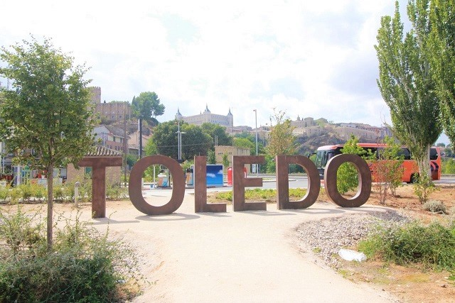

| 1 | : | Me desperté alrededor de las 4:00 de la mañana porque tenía jet-lag. |
| 2 | : | España estaba en horario de verano y la diferencia con Japón era de 7 horas. |
| 3 | : | Eran alrededor de las 11:00 de la mañana de Japón. |
| 4 | : | También ese día tuve que hacer turismo con falta de sueño. |
| 5 | : | El objetivo del día era ir a Toledo y a Segovia, ambos. |
| 6 | : | Cada ciudad está en un lugar al que podíamos viajar en un día desde Madrid pero es difícil ir a ambos en un día. |
| 7 | : | Kanako y Richard habían ido a Toledo el día anterior y ese día ellos iban a hacer turismo en Madrid e ir a Segovia por eso pasamos un día separados de ellos. |
| 8 | : | Decidimos ir a Toledo, primero. |
| 9 | : | Se dice que si tienes solamente un día en España, debes ir a Toledo, es una gran atracción turística. |
| 10 | : | Es una ciudad fortificada natural, construida en una montaña rocosa rodeada por el río Tajo. |
| 11 | : | Quedan los edificios mezclados de culturas Islam, Judaísmo y Cristianismo y todo el casco antiguo está registrado como Patrimonio de la Humanidad. |
| 12 | : | Salimos del hotel después de las 7:30, pero todavía estaba oscuro afuera. |
| 13 | : | Fuimos a la estación de Atocha y compramos los billetes de ida y vuelta a Toledo, en la ventanilla. |
| 14 | : | El tren se llama AVANT, saldría a las 8:50 y llegaría a Toledo a las 9:23 y cada billete costaba €11.10. |
| 15 | : | Para volver, el tren también se llama AVANT, el tren saldría de Toledo a las 15:25 y llegaría a Atocha a las 15:58 y cada billete costaba €11.10 también. |
| 16 | : | El número de la plataforma de la que sale el tren se mostraría en el tablero electrónico de anuncios. |
| 17 | : | Antes de entrar a la plataforma, había control de seguridad como en el aeropuerto. |
| 18 | : | Parecía que llevaría tiempo por eso queríamos saber el número de la plataforma lo antes posible pero no lo mostraban rápidamente. |
| 19 | : | Finalmente lo mostraron 15 minutos antes de la salida y rápidamente fuimos a control de seguridad cerca de la plataforma. |
| 20 | : | No tuvimos tiempo de comprar el desayuno y subimos al tren rápidamente. |
| 21 | : | El tren era tan cómodo como el shinkansen de Japón y salió a tiempo. |
| 22 | : | El paisaje por la ventanilla era solamente tierra seca y era un poco aburrido. |
| 23 | : | Llegamos a Toledo a las 9:23, a tiempo. |
| 24 | : | La estación de Toledo de Renfe se abrió en 1858 y era artística con hermosa decoración. |
| 25 | : | Salimos de la estación y subimos la cuesta y nos dirigimos al casco antiguo. |
| 26 | : | Subimos por casi 5 minutos, pudimos ver el puente bonito, se llama Puente de Alcántara construido en la época romana y también pudimos ver el casco antiguo de Toledo, arriba. |
| 27 | : | Tomamos varias fotos del puente y del casco antiguo desde allí. |
| 28 | : | Cruzamos el puente y caminamos un poco, había una escalera mecánica y pudimos subir al casco antiguo. |
| 29 | : | En el casco antiguo había muchos callejones estrechos y sinuosos y no pudimos saber dónde estábamos en nuestro pequeño mapa guía. |
| 30 | : | Estábamos dirigiéndonos a la catedral pero no llegábamos aunque veíamos la torre. |
| 31 | : | Después de todo un hombre local nos llevó a la catedral. |
| 32 | : | La catedral de Santa María de Toledo es una catedral gótica que fue construida durante casi 270 años desde el siglo XIII hasta el siglo XV. |
| 33 | : | Es la cuarta más grande en Europa después de la Basílica de San pedro en el Vaticano, la Catedral de San pablo en Inglaterra y la Catedral de Sevilla en España. |
| 34 | : | La catedral se abrió a las 10:00 en punto. |
| 35 | : | John dijo que no quería pagar para entrar a una catedral, pero yo quería mirar dentro y pagamos €10.00 por persona y entramos. |
| 36 | : | El interior de la catedral estaba lleno de lujosas decoraciones y me recordó la fuerza del catolicismo. |
| 37 | : | Lo mismo cuando fuimos a Italia, John parecía que no apoyaba a las iglesias demasiado lujosas. |
| 38 | : | Luego desayunamos tarde en un restaurante cercano. |
| 39 | : | Era simple, con un bocadillo y bebida, pero su precio era razonable y muy delicioso. |
| 40 | : | No tuvimos tiempo para ver la ciudad así que decidimos tomar un autobús turístico que se llama "Zocotren" corriendo alrededor del casco antiguo. |
| 41 | : | Nos dirigimos a la Plaza de Zocodover de donde el autobús saldría pero estábamos perdidos otra vez y pasábamos en la misma carretera muchas veces. |
| 42 | : | Les preguntamos a algunos locales algunas veces y finalmente llegamos a la plaza. |
| 43 | : | Afortunadamente hubo un autobús que iba a salir en punto y compramos los billetes pagando €4.50 por persona. |
| 44 | : | Era un autobús bonito en forma de tren. |
| 45 | : | Estuvimos haciendo un circuito del casco antiguo a lo largo del río, escuchando la audio guía por 45 minutos en autobús. |
| 46 | : | En el camino nos bajamos del autobús en el observatorio, Mirador Del Valle y tomamos unas fotos del casco antiguo de Toledo. |
| 47 | : | John quería ir al baño todo el tiempo, y después de hacer turismo en el autobús, decidimos ir a un museo. |
| 48 | : | No había baño público allí, por eso tuvimos que hacer algo. |
| 49 | : | Queríamos ir al museo de Santa Cruz pero accidentalmente entramos a otro pequeño museo que se llama "Centro de Arte Moderno". |
| 50 | : | El billete para entrar costaba €4.00 por persona. |
| 51 | : | Era un museo con obras únicas y había pocos visitantes, pero era un buen lugar para usar el baño. |
| 52 | : | Después de usar el baño volvimos al museo pasando una puerta, diferente a la que habíamos usado para salir. |
| 53 | : | Entonces había una habitación muy grande y había mucha gente y las obras eran maravillosas, diferentes a las que habíamos visto antes de ir al baño. |
| 54 | : | Dijimos "también hay obras maravillosas en este museo". |
| 55 | : | Entonces un hombre corrió hacia nosotros y nos dijo muestren el billete, por favor. |
| 56 | : | Cuando estábamos buscando el billete, el hombre vio la llave del casillero donde habíamos dejado nuestro equipaje, y nos dijo "es el museo de Santa Cruz aqui". |
| 57 | : | "Lo siento mucho, el empleado no los guió adecuadamente", el hombre se disculpó con nosotros. |
| 58 | : | Pronto regresamos al primer museo pero tuvimos la suerte de ver un poco el museo de Santa Cruz. |
| 59 | : | Salimos del museo y volvimos a la estación de Toledo. |
| 60 | : | Hasta la hora de la salida del tren, comimos helado y tomamos café en la estación. |
| 61 | : | John pidió un café con leche y yo pedí un café sin leche. |
| 62 | : | Entonces mi café era muy poco. |
| 63 | : | Aprendí que tenía que pedir un café americano no sin leche. |
| 64 | : | Todos los helados que comimos en España eran deliciosos. |
| 65 | : | Otro destino, Segovia está al otro lado de Toledo desde Madrid. |
| 66 | : | Así que tuvimos que volver a Madrid para ir a Segovia. |
| 67 | : | Tal como lo planeado tomamos el tren de Toledo a las 15:25 y llegamos a la estación de Madrid, Atocha a las 15:58. |
| 68 | : | Los trenes a Segovia salen de la estación Chamartin en Madrid. |
| 69 | : | Fuimos a Chamartin de Atocha en metro. |
| 70 | : | Llegamos a Chamartin en, casi 30 minutos y fuimos a la ventanilla para comprar el billete. |
| 71 | : | La ventanilla estaba ocupada pero pudimos comprar los billetes de ida y vuelta a Segovia. |
| 72 | : | El tren para ir se llama ALVIA, saldría a las 17:30 y llegaría a Segovia a las 17:57 y el billete costaba €20.55 cada uno. |
| 73 | : | El tren para volver se llama AVANT, saldría de Segovia a las 21:12 y llegaría a Chamartin a las 21:40 y el billete costaba €11.10. |
| 74 | : | Estuvimos esperando que se mostrara el número de la plataforma en el tablero electrónico de anuncios y entonces fuimos al control de seguridad y subimos al tren. |
| 75 | : | El tren salió a tiempo. |
| 76 | : | El paisaje afuera era un poco aburrido como cuando fuimos a Toledo. |
| 77 | : | El tren llegó a Segovia a las 17:57, a tiempo. |
| 78 | : | La estación de Segovia era moderna a diferencia de la de Toledo. |
| 79 | : | Hay que tomar un autobús o taxi, desde la estación hasta el casco antiguo. |
| 80 | : | No tuvimos tiempo de esperar el autobús, por eso tomamos un taxi. |
| 81 | : | John estaba hablando con el conductor del taxi en español, activamente. |
| 82 | : | Creo que el conductor estaba hablando español a su velocidad normal. |
| 83 | : | Yo no podía decir nada porque soy tímida. |
| 84 | : | Después de 15 minutos vimos un acueducto enorme. |
| 85 | : | Le dimos €8.00 y propina y bajamos del taxi con entusiasmo. |
| 86 | : | Segovia es un popular destino turístico con ambiente romano, islámico y medieval en toda la ciudad. |
| 87 | : | El casco antiguo y el acueducto también están registrados como sitios Patrimonio de la Humanidad. |
| 88 | : | El enorme acueducto romano está en la entrada del casco antiguo. |
| 89 | : | El acueducto romano de Segovia fue construído en el imperio romano en el siglo uno, antes de Cristo. |
| 90 | : | Es un enorme puente con una longitud de 728 metros, y 30 metros de altura y está hecho de granito, sin usar adhesivo. |
| 91 | : | Durante la era del reino islámico parte del puente fue destruida y estaba inutilizable pero fue reparada por la reina Isabel primera y fue utilizado hasta el siglo XX. |
| 92 | : | Pasamos debajo del puente emocionados y entramos en el casco antiguo. |
| 93 | : | El primer destino fue el alcázar que está al final del casco antiguo. |
| 94 | : | Caminábamos con el pequeño mapa del libro guía pero el alcázar no aparecía. |
| 95 | : | El paisaje de la ciudad estaba cambiando a moderno y les preguntamos a dos ancianas sobre la ubicación del alcázar. |
| 96 | : | No podíamos entender su español pero sabíamos que nos habíamos equivocado y teníamos que volver al acueducto romano. |
| 97 | : | En el camino de regreso, les preguntamos a los niños locales y parecía que teníamos que volver al acueducto. |
| 98 | : | Volvimos al puente y pudimos ir al camino correcto. |
| 99 | : | Teníamos poco tiempo porque nos habíamos perdido. |
| 100 | : | Nos dirigimos al alcázar corriendo y pudimos llegar en casi 15 minutos desde el acueducto. |
| 101 | : | Ya pasadas las 19:30 pero todavía había suficiente luz para hacer turismo. |
| 102 | : | El Alcázar de Segovia tiene 900 años. |
| 103 | : | El hermoso castillo es el modelo del castillo en la perícula Blanca Nieves de Disney. |
| 104 | : | Durante la era de la dinastía de Los Omeyas, los musulmanes construyeron la base, pero luego los cristianos recuperaron la península Ibérica, por medio de la reconquista y construyeron el castillo más hermoso de España. |
| 105 | : | Por cierto, la reconquista fue un movimiento para recuperar la península Ibérica ocupada por los musulmanes. |
| 106 | : | La reconquista tardó desde la invasión del islam en 711 hasta la apertura de Granada en 1,492 y Portugal y España se establecieron en este proceso. |
| 107 | : | Pagamos €5.50 por persona y entramos. |
| 108 | : | Quería verlo más, pero lo visitamos por unos 15 minutos y nos dirigimos al siguiente destino rápidamente. |
| 109 | : | Caminamos casi 10 minutos y llegamos a la catedral de Segovia. |
| 110 | : | Por supuesto pagamos €3.00 por persona y entramos. |
| 111 | : | La catedral de Segovia fue construida desde 1,525 por más de 50 años. |
| 112 | : | El interior de la catedral era tan lujoso como un museo. |
| 113 | : | Recordé la fuerza del catolicismo, otra vez. |
| 114 | : | Había ido a muchas iglesias en España y había notado una cosa. |
| 115 | : | Cuando fuimos a Italia, antes, había muchas personas sin hogar alrededor de toda la iglesia y siempre mendigaban. |
| 116 | : | Sin embargo en España había poca mendicidad. |
| 117 | : | Ya pasadas las 20:00, salimos de la catedral después de verla por, casi, 10 minutos. |
| 118 | : | Vimos la hermosa puesta del sol en Segovia desde la colina, cerca de la catedral y entonces volvimos al acueducto rápidamente. |
| 119 | : | Regresamos a la estación de Segovia en taxi. |
| 120 | : | Hasta la hora de la salida del tren a las 21:12 comimos bocadillos y panes en la cafetería de la estación. |
| 121 | : | Fueron nuestra cena. |
| 122 | : | El tren salió a tiempo y llegó a la estación de Chamartin a tiempo. |
| 123 | : | Antes habíamos tomado el TGV en Italia y se retrasaba muchas veces. |
| 124 | : | Pero descubrí que los trenes españoles son muy puntuales. |
| 125 | : | Desde Chamartin, regresamos a la estación de Antón Martín en metro, la más cercana a nuestro hotel. |
| 126 | : | En el camino de regreso al hotel, fuimos a una tienda de churros cerca de la estación. |
| 127 | : | Habíamos escuchado que en España es popular comer churros metiéndolos en chocolate caliente. |
| 128 | : | Parecía que iban a cerrar la tienda y no había clientes, había solamente unos churros chocolate. |
| 129 | : | Pedimos dos churros chocolate y dos chocolates calientes para llevar. |
| 130 | : | Entonces la empleada nos dio dos churros chocolate demás. |
| 131 | : | Creí que generalmente los españoles eran generosos. |
| 132 | : | Recibimos los churros y miramos a nuestro alrededor y había una cola de muchos clientes detrás de nosoros. |
| 133 | : | John me dijo, "Hacchi siempre llamas a muchos clientes". |
| 134 | : | A veces me han dicho eso los empleados de los restaurantes y de las tiendas. |
| 135 | : | Lo sentí mucho porque la empleada estaba ocupada justo antes de cerrar. |
| 136 | : | Regresamos al hotel y comimos los churros chocolate metiéndolos en chocolate caliente. |
| 137 | : | Estaban deliciosos, pero demasiado dulces. |
| 138 | : | Yo había dado 32,000 pasos ese día también por eso estaba muy cansada y fui a la cama pronto. |
{kind=link}
{kind=link}
{kind=link}
{kind=link}
{kind=link}
{kind=link}
{kind=link}
{kind=link}
{kind=link}
{kind=link}
{kind=link}
{kind=link}
{kind=link}
{kind=link}
{kind=link}
{kind=link}